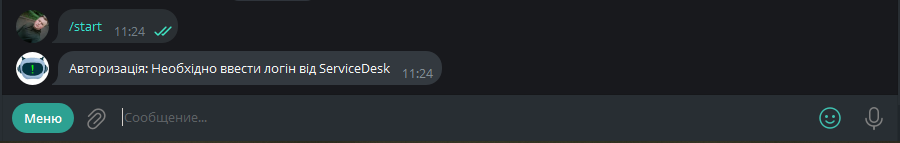
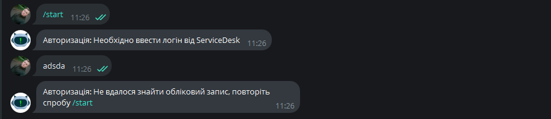
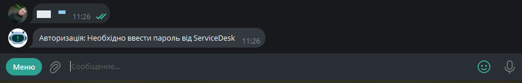
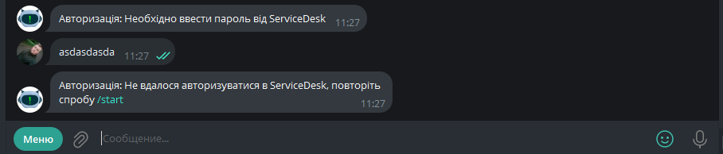
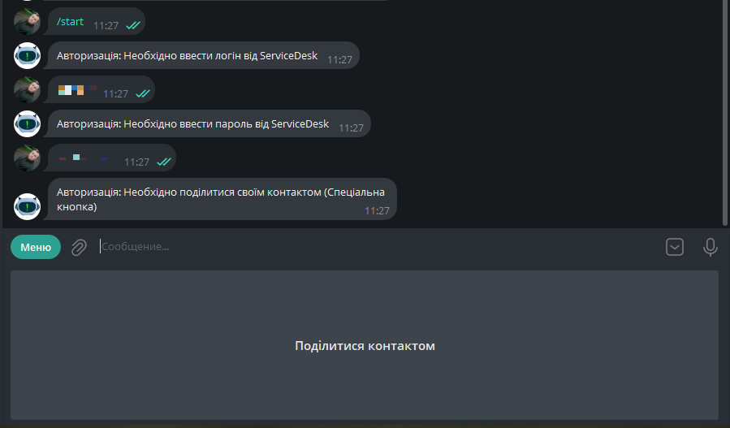
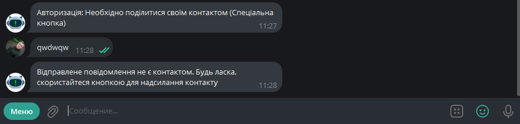

Авторизація
Весь вищезазначений функціонал доступний користувачеві тільки після авторизації.
Пошук бота в мережі Telegram
Перейти за посиланням, яке має відкрити телеграм з ботом.
Знайти бота за допомогою пошуку в додатку (у пошуку ввести
@PCServiceTicketsBot)
Початок авторизації
Ввести команду
/startабо натиснути на відповідну кнопкуSTART
Авторизація за допомогою облікових даних ServiceDesk
Ввести логін від ServiceDesk
 У разі, якщо логін неправильний - бот повідомить про це і необхідно спробувати ще раз

Ввести пароль від ServiceDesk
 У разі, якщо пароль неправильний - бот повідомить про це і необхідно спробувати ще раз

Надання свого Telegram контакту для ідентифікації
Надіслати свій контакт для ідентифікації
 У разі, якщо надіслано щось інше, крім контакту, бот повідомить про це і необхідно спробувати ще раз

Після надсилання коректного контакту авторизація вважається завершеною
01 сентября 2025